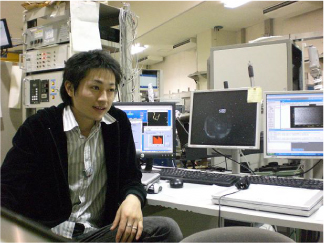

安斎太陽

| 研究テーマ | 銅酸化物高温超伝導体の電子状態の研究 低エネルギー放射光や硬 X 線放射光を用いた bulk 敏感光電子分光 薄膜銅酸化物高温超伝導体の in situ 光電子分光 |
|---|---|
| 略歴 |
2011.4- 広島大学放射光科学研究センター 研究員 2008.4- 呉工業高等専門学校 非常勤講師(化学) 2008.4- 日本学術振興会 特別研究員 (DC1) 2008.4- 広島大学 大学院理学研究科 博士課程後期 物理科学専攻 2006.4- 広島大学 大学院理学研究科 博士課程前期 物理科学専攻 2002.4- 広島大学 理学部 物理科学科 2001.3- 福井県藤島高等学校 卒業 |
| 卒業論文題目 | 内殻光電子分光による銅酸化物高温超伝導体の電子状態の研究 |
| 修士論文題目 | 低エネルギー放射光による銅酸化物高温超伝導体Bi2212のホール濃度に依存した準粒子構造の研究 |
| 学位論文題目 | Low-Energy Angle-Resolved Photoemission Study of High-Tc Superconductor Bi2Sr2CaCu2O8+δ」 （高温超伝導体 Bi2Sr2CaCu2O8+δ の低エネルギー角度分解光電子分光） |
| 原著論文 | Energy-Dependent Enhancement of the Electron-Coupling Spectrum of the Underdoped Bi2Sr2CaCu2O8+δ Superconductor Phys. Rev. Lett. 105, 227002 (2010) |
| 国際会議 | リスト |
| 国内学会 | リスト |
| 受賞歴 | 3. 賞名：3rd Best Poster Award International Workshop on Strong Correlations and Angle-Resolved Photoemission Spectroscopy 2009 授与者：L. Patthey, A. Damascelli, D. Manske, V. N. Strocov 受賞年月：2009.7 2. 賞名：優秀ポスター賞 2008年度PF研究会「高分解能角度分解光電子分光研究と将来展望」 授与者：藤森淳、高橋隆、尾嶋正治 受賞年月：2008.12 1. 賞名：卒業論文発表優秀賞 授与者：圓山裕 物理科学科長 受賞年月：2006.3 |
| 資格 | ・第１種放射線取扱主任者免状 (平成 21 年 6 月 5 日) ・ガンマ線透過写真撮影作業主任者 (平成 21 年 11 月 10 日) ・エックス線作業主任者 (平成 21 年 12 月 1 日) |